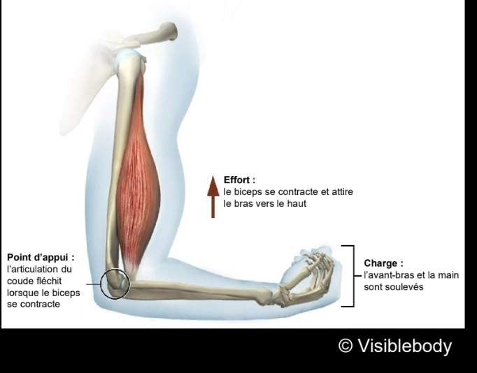
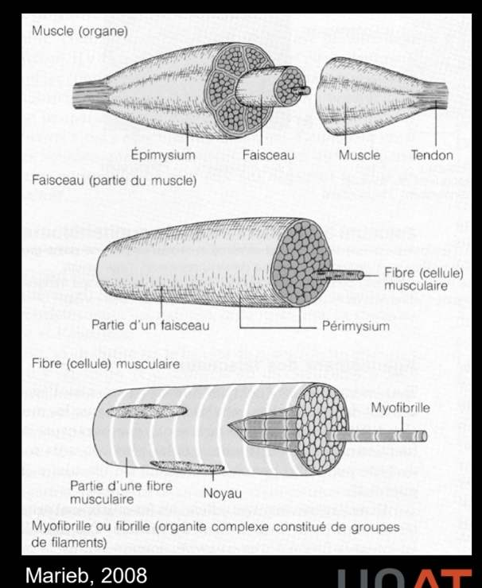
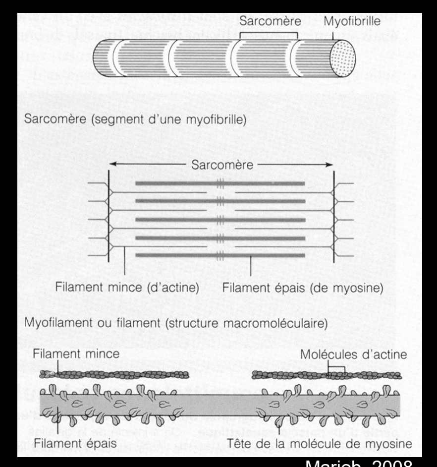
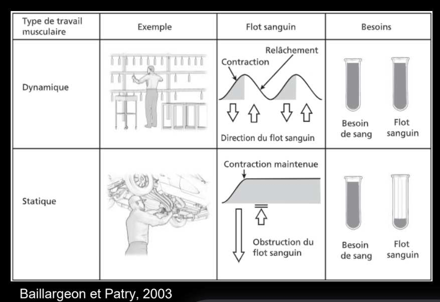
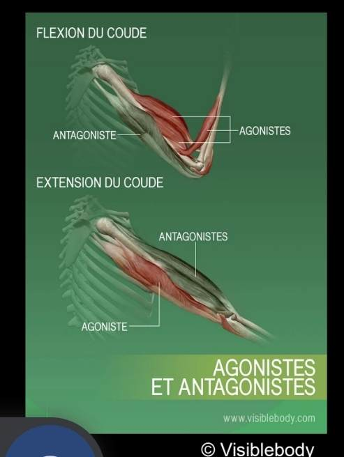

Système musculaire
Le muscle est l'élément moteur du mouvement. Sa fonction essentielle est de se contracter pour appliquer une tension sur les os via les tendons, ce qui engendre le mouvement du segment. La compréhension de la contraction musculaire et de ses modes (statique, dynamique) est centrale en ergonomie pour comprendre la fatigue, les microlésions et la prévention des TMS.
Table des matières
- Trois types de muscles
- Structure du muscle squelettique
- Contraction musculaire
- Types de contraction
- Travail dynamique versus statique
- Agoniste et antagoniste
- Application terrain
- Ressources
Trois types de muscles
| Type | Description |
|---|---|
| Muscle cardiaque | Strié, involontaire, exclusivement dans le cœur |
| Muscles lisses | Non striés, involontaires (parois des vaisseaux, viscères) |
| Muscles squelettiques | Striés, volontaires, attachés aux os par des tendons |
L'ergonomie s'intéresse essentiellement aux muscles squelettiques.
Structure du muscle squelettique

Toucher l'image pour l'agrandirForme générale
- Un corps (ventre).
- Deux extrémités (tendons) attachées aux os.
Pour générer un mouvement, le muscle doit avoir au moins deux points d'attache de part et d'autre d'une articulation (voir Articulations).
Sous-unités (du plus grand au plus petit)
Muscle > Faisceaux > Fibres > Myofibrilles > Sarcomères (filaments d'actine et de myosine).

Toucher l'image pour l'agrandirContraction musculaire
Les myofibrilles représentent les unités contractiles. Elles sont séparées en sarcomères composés de filaments d'actine et de myosine.
Lorsqu'un influx nerveux stimule le muscle, les têtes de myosine se lient aux filaments d'actine et glissent sur eux, ce qui raccourcit le sarcomère et donc le muscle.
La contraction nécessite de l'énergie sous forme d'ATP. L'organisme régénère constamment l'ATP au niveau musculaire, ce qui requiert
- Un apport en nutriments (glucose, acides gras).
- Un apport en oxygène.
- L'élimination des déchets métaboliques.
Au cours d'un exercice, le débit sanguin musculaire peut atteindre une valeur 15 à 20 fois supérieure à celui du muscle au repos.

Toucher l'image pour l'agrandirTypes de contraction
| Type | Description | Exemple |
|---|---|---|
| Isométrique | Le muscle se contracte sans changement de sa longueur | Maintien d'une charge à bout de bras |
| Concentrique | Contraction avec raccourcissement | Lever une charge (phase montante) |
| Excentrique | Contraction avec allongement | Déposer une charge en contrôle |
Les mouvements impliquent souvent des cycles concentrique-excentrique.
Travail dynamique versus statique

Toucher l'image pour l'agrandir| Type | Caractéristique | Effet |
|---|---|---|
| Dynamique | Cycles de contraction et relâchement | Bonne circulation sanguine, fatigue lente |
| Statique | Contraction maintenue (souvent isométrique) | Diminution du flux sanguin, fatigue rapide, accumulation de déchets métaboliques |
Particularité du travail statique
- Même des contractions aussi faibles que 2 % de la force maximale peuvent générer fatigue et inconfort si elles sont maintenues longtemps.
- Le statisme prolongé apparaît dans plusieurs situations à risque : travail sédentaire prolongé, postures statiques contraignantes, travail bras au-dessus de la tête.
- Mène à l'apparition de points gâchettes (contractures musculaires hypersensibles).
Agoniste et antagoniste
Un muscle ne fait que tirer ou retenir. Chaque muscle possède au moins un muscle effectuant le mouvement opposé.
- Agoniste : principaux muscles contractés qui génèrent le mouvement ou la résistance.
- Antagoniste : muscles dont la contraction s'oppose au mouvement; il s'étire lors du mouvement.

Toucher l'image pour l'agrandirApplication terrain
La fatigue musculaire est un enjeu central en mine.
- Postes avec composante statique forte : foreur (maintien des outils en position), opérateur de cabine vibrante (maintien postural contre les Vibrations), boulonneur (bras en l'air).
- Postes avec contraction répétitive : opérateurs du concentrateur, plongée manuelle dans un cycle court (voir Travail répétitif).
- Cofacteurs
- Chaleur souterraine : déshydratation, baisse de capacité musculaire.
- Froid en surface l'hiver : diminution du débit sanguin musculaire, perte de dextérité, raideur.
- Vibrations : réflexe tonique vibratoire qui augmente la contraction et donc la fatigue.
Conséquences ergonomiques
- Allouer des temps de récupération adéquats pour permettre la régénération musculaire.
- Alterner les tâches pour solliciter différents groupes musculaires.
- Fournir des supports d'outils mécaniques pour éviter le travail statique prolongé en suspension.
- Adapter l'environnement thermique au type d'effort musculaire requis.
Ressources
| Document | Type | Source |
|---|---|---|
| Cours SST 1162 - S2 - Système musculaire | Cours | UQAT |
| Baillargeon et Patry, Les troubles musculosquelettiques du membre supérieur | Guide | Direction santé publique, 2003 |
Articles wiki connexes
Pages qui pointent ici (10)
- 🏠 Wiki Ergonomie, mines Ergonomie
- Anatomie et biomécanique Ergonomie
- Articulations Ergonomie
- Biomécanique Ergonomie
- Postures contraignantes Ergonomie
- Système musculosquelettique Ergonomie
- TMS (troubles musculosquelettiques) Ergonomie
- Travail en environnement chaud Ergonomie
- Travail répétitif Ergonomie
- Travail sédentaire Ergonomie